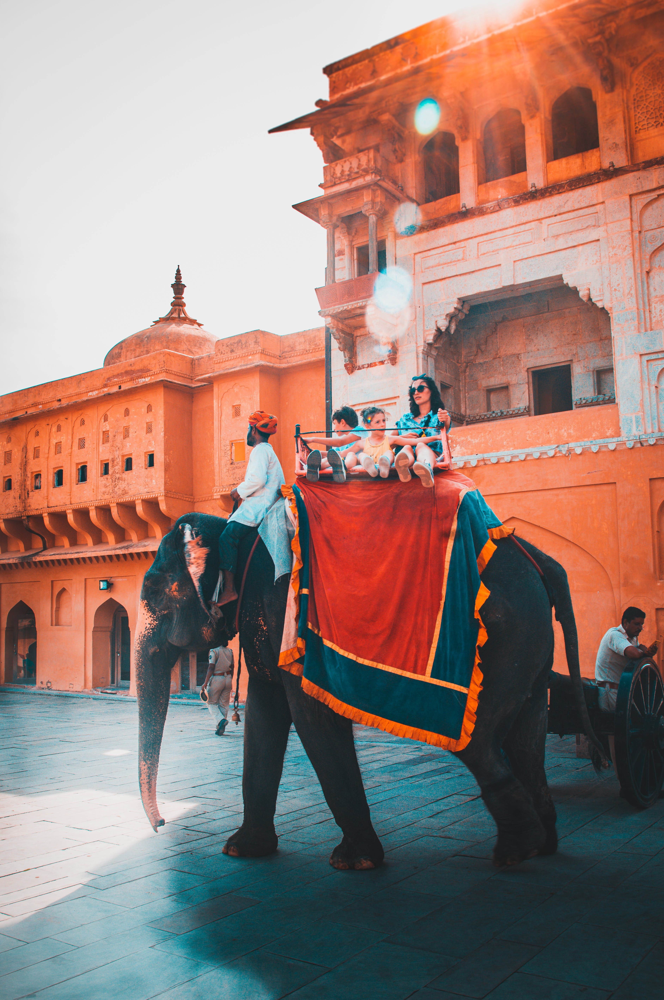
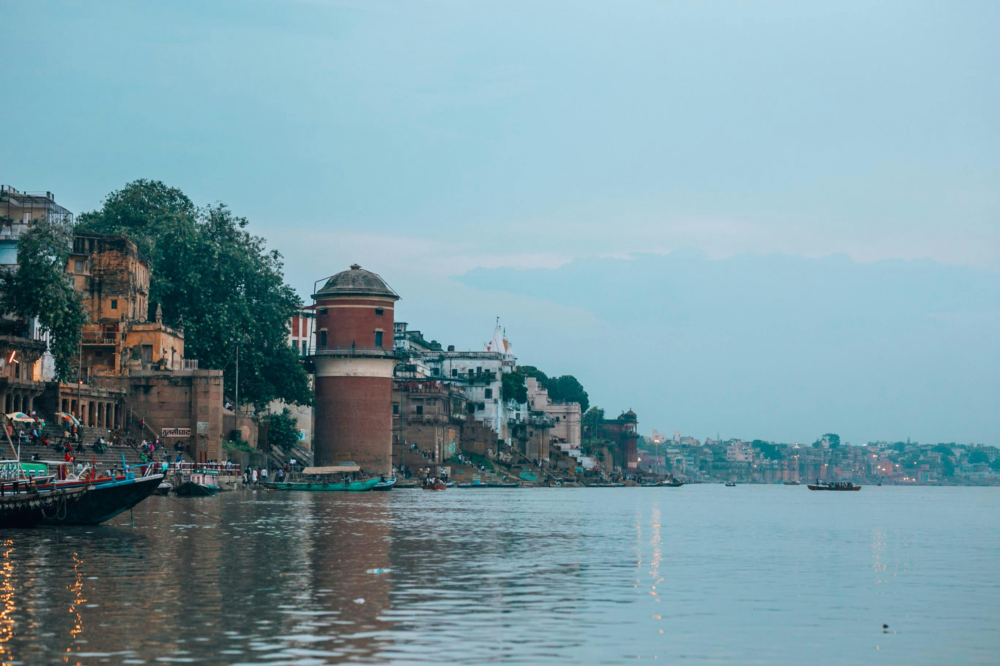

Money Goyal - Top 5 Indian Travel Destinations
1. Taj Mahal, Agra

Located in Agra, Uttar Pradesh, the Taj Mahal is a symbol of love and one of the Seven Wonders of the World.
Read More2. Jaipur, Rajasthan
The Pink City, known for its vibrant culture, magnificent palaces, and historical forts.
Read More3. Kerala Backwaters

Experience the serene backwaters of Kerala, a network of lakes, rivers, and canals.
Read More4. Varanasi, Uttar Pradesh
One of the oldest cities in the world, known for its spiritual significance and the Ganges River.
Read More5. Rishikesh, Uttarakhand

A holy city on the banks of the Ganges, famous for yoga and adventure activities.
Read More